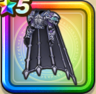

あくまのよろい上
攻略班 7.0点 / バギ属性耐性+5%破壊神シドーへの耐性+10%ヒャド属性耐性+5%ドルマ属性耐性+5%ドルマ属性耐性+5%【バトマス】スキルの斬撃ダメージ+3%ジバリア属性斬撃・体技ダメージ+6%【呪い】自分が受けるスキルのHP回復効果-5%
くわしい特徴
【レベル別習得スキル】 Lv1バギ属性耐性+5% Lv5破壊神シドーへの耐性+10% Lv8【呪い】自分が受けるスキルのHP回復効果-5% Lv10すばやさ+5 Lv12ヒャド属性耐性+5% Lv15【バトマス】スキルの斬撃ダメージ+3% Lv18ジバリア属性斬撃・体技ダメージ+6% Lv20ドルマ属性耐性+5% Lv23守備力+7 Lv25ドルマ属性耐性+5% 【限界突破スキル】 1凸攻撃力+5 2凸守備力+5 3凸すばやさ+7 4凸さいだいHP+10